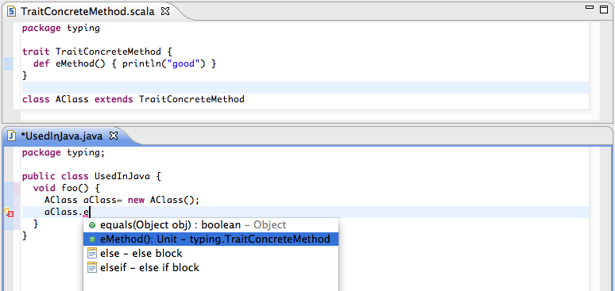
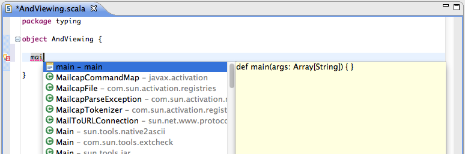
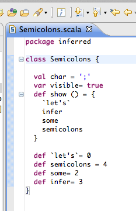
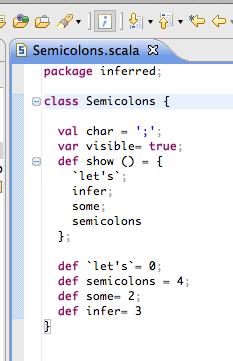
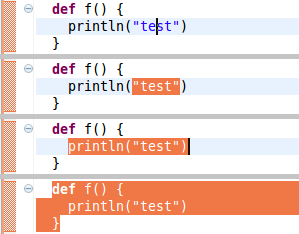

The Scala code is check as it is entered. It allows to see small or more complex compilation error as the code is type. No more endless cycle code → code → code → compile → error reported → fix error → compile → error reported → fix error →....

Scala IDE provides full code completion support, returning the entities available in the current context. Code completion is enable by using Ctrl+Space in the Scala Editor.
In Scala source files, code completion returns the valid Scala and Java proposals.

The Scala elements compatible with Java are provided in Java source files.
Code templates are available in the completion proposals in code assist. They provide shortcuts for boilerplate code like main method definition and asInstanceOf invocation.
The list of available templates can be viewed and modified in the Scala → Templates preference page.
As in the Java tooling, Mark Occurrences highlights within a file where a type, variable or method is referenced.

Use the toggle button in the to enable infer semicolons. It will display the inferred semicolons in gray as an overlay on the code.
Without:  With: 
Using alt+shift+up and alt+shift+down selects larger or smaller portion of the AST. It allows for quick selection of sub-expressions or statements.
The Scala editor has full syntax highlighting support, including comments, control structures and embedded XML.


{kind=link}
{kind=link}